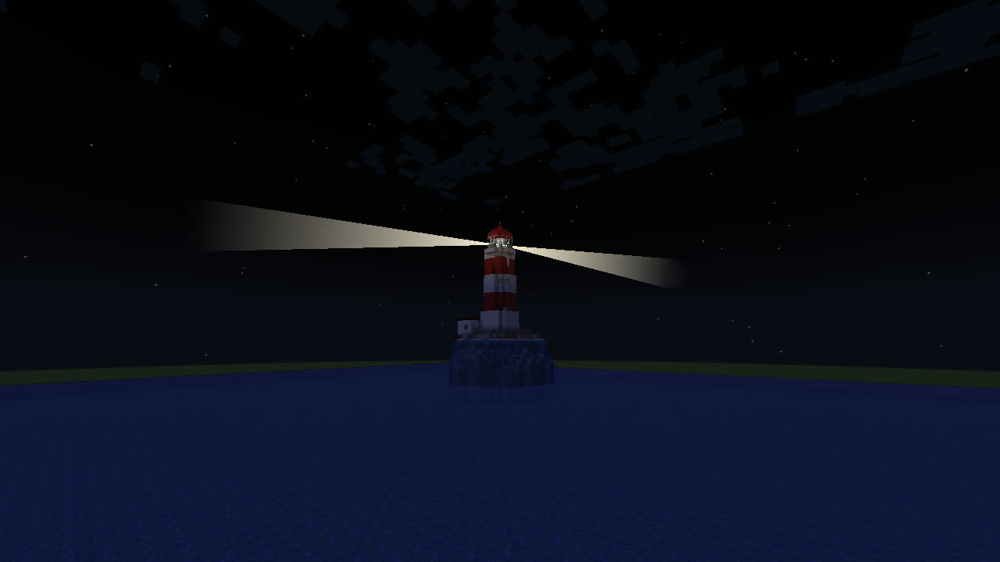
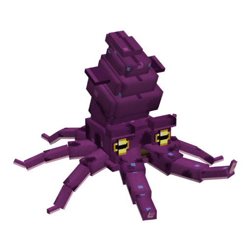
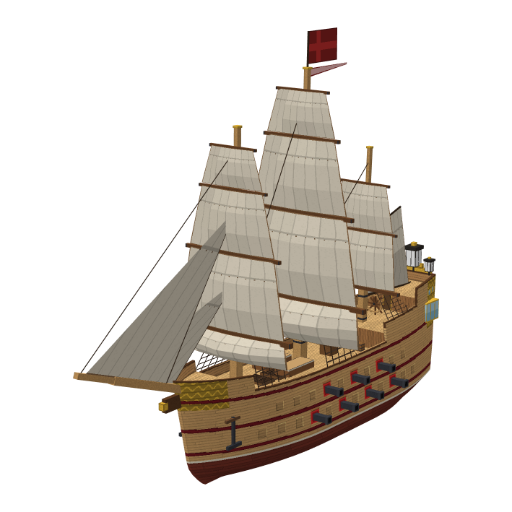

Ton premier bateau
Il s'achète au port, à la Borne, sur le quai, à l'est du palais. Tu hisses les voiles et tu pars.
La mer de Casteria
Autour des îles de Casteria, la mer est immense, et elle n'est pas là pour décorer. Tu achètes un bateau, tu prends la barre, et tu pars couler des pirates et remonter des trésors.
Pas besoin d'être un vieux loup de mer. Voilà comment ça se passe.
Il s'achète au port, à la Borne, sur le quai, à l'est du palais. Tu hisses les voiles et tu pars.
Plus tu vas loin, plus la mer est dangereuse, et plus elle rapporte. À toi de voir jusqu'où tu oses aller.
Embarque un ami sur ton navire : un à la barre, un au canon. Les pirates n'ont qu'à bien se tenir.
Tout ce qui suit a été créé pour Casteria. On t'en montre un peu : le reste, tu le découvriras à la barre.

Sur la mer de Casteria, tu ne navigues pas seul : des navires pirates croisent au large. Tu manœuvres, tu vises, et tu fais parler le canon.
Cinq navires à barrer, et chacun se pilote pour de bon : tu tiens la barre, tu hisses les voiles, tu choisis ton cap. Les voiles et la coque se peignent à tes couleurs.
Une caisse flotte contre ta coque ? Le filet la prend : tiens le clic pour la remonter, et lâche avant le rouge, sinon la corde casse. Ce qu'elle porte va droit dans ta cale.
Au large, des îles gardent des tas de ressources. Pour en prendre un, clique quand l'aiguille de la boussole passe sur la croix : réussi, le butin part dans ta cale.


Il t'attend dans son arène, comme les autres boss, avec son armure.
Les boss et leurs armuresTa Chaloupe, le plus petit des navires, se paie à la Borne du port dès le niveau 15. Ta première sortie est une leçon en cinq étapes, près du quai ; ensuite, toute la mer s'ouvre, et ta flotte grandit avec toi : quatre navires de plus, jusqu'au Vaisseau amiral, au niveau 60. Le Kraken des Abysses, lui, t'attend dans son arène : les quatre pièces de son armure donnent 15 % de butin en plus en mer.

Les questions qu'on nous pose le plus souvent.
Oui, en version 1.21.1. Les bateaux, les pirates et les canons n'existent pas dans le jeu de base : ils ont été créés pour Casteria.
Non. Le launcher de Casteria installe le jeu et les mods tout seul, et il se met à jour tout seul. Sur Windows, sur Mac et sur Linux. Casteria se joue seulement par son launcher.
Oui. Le launcher et le serveur sont gratuits.
Commence par ton île : c'est elle qui te fait vivre. Quand elle tourne, la mer t'attend. Le guide du débutant te montre par où passer.
Oui : à deux sur le même navire, et tu peux inviter tes amis sur ton île.
Oui : au niveau 24, la Batterie côtière se bâtit sur ta rive ouest. Au coucher du soleil, une fois par heure au plus, la cloche sonne : huit boulets pour couler la voile qui passe.
Oui : certaines îles ont des bêtes qui marchent sur l'eau. Lance-leur des œufs de poule : capturée, son œuf va dans ton sac, et elle éclot dans tes enclos.
Le Perroquet corsaire : il se trouve dans un trésor de la Carte marine. Il a tout vu, tout entendu, et il répète tout.
Dans l'esprit du skyblock : tu pars de presque rien sur ton île, et tu bâtis tout. Mais ici, ton île est posée sur la mer, pas dans le vide, et cette mer se parcourt en bateau.